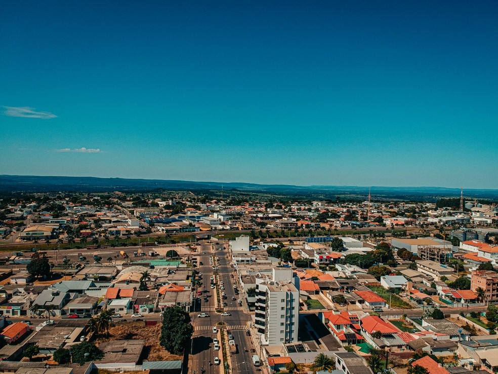

Notícias Cidade
Destaque
Primavera do Leste está entre as 100 mais conectadas do país em 2021
Postado 6 Setembro 2021

Primavera e Cuiabá são as únicas que aparecem na lista dos 100 municípios brasileiros mais inteligentes e mais conectados, segundo o Ranking Connected Smart Cities
Primavera do Leste é a única do interior de Mato Grosso que está entre as cidades mais conectadas do país em 2021, segundo o Ranking Connected Smart Cities. De todo o estado, apenas Primavera e Cuiabá, que é a capital, aparecem em meio aos 100 municípios brasileiro.
No ranking geral das cidades com maior desenvolvimento do país, Primavera ocupa a 79ª posição e Cuiabá, a 39º, com notas 30,7 e 32,8, respectivamente. A nota máxima é 70.
O estudo é baseado nos seguintes indicadores: mobilidade, urbanismo, meio ambiente, energia, tecnologia e inovação, economia, educação, saúde, segurança, empreendedorismo e governança.
Primavera do Leste se destaca no eixo da educação, na 55ª colocação no ranking, com nota 5,48. Desponta junto com Cuiabá entre as 100 melhores do país e são as duas do estado nesse grupo. A nota máxima neste recorte é de 12 pontos.

O município também está entre os melhores em indicadores de saúde. Do estado, aparecem Primavera do Leste, Cuiabá, Barra do Garças e Lucas do Rio Verde.
PO prefeito de Primavera do Leste, Leonardo Bortolin (MDB), diz que o relatório é resultado de um trabalho voltado para o desenvolvimento econômico aliado à qualidade de vida da população. Foram feitos investimentos nas áreas de saúde e educação nos últimos anos.
“Temos três grandes hospitais particulares de referência para a região, além de ser polo educacional com instituições de ensino particulares e pública como o Instituto Federal de Mato Grosso que oferta cursos técnicos e superiores para a formação de mão de obra qualificada”, declarou.
Ainda segundo Bordin, R$ 30 milhões é um número excelente para um município com o potencial econômico de Primavera do Leste. "Novembro e dezembro são os meses que mais movimento o comércio durante o ano por causa das festas de fim de ano. Esse dinheiro vai alavancar o comércio e com isso as contratações também vão aumentar", conclui com otimismo.
O setor público representa grande parte do PIB (Produto Interno Bruto)de Primavera do Leste, desta forma, a circulação do salário do servidor é essencial para manter a economia aquecida.
Urbanismo
Primavera do Leste também ocupa a 24ª colocação do país no eixo urbanismo e é a 1ª do estado nesta área. O valor per capita investido no setor foi de R$ 544,40.
Todas as cidades mais bem posicionadas por região contam com emissão de alvará pelo site da prefeitura municipal. Neste ranking também aparecem Várzea Grande, Rondonópolis e Sinop.
Empreendedorismo
Além disso, é um dos municípios melhores para empreender. Primavera e outras três cidades de Mato Grosso aparecem entre as 100 melhores no eixo empreendedorismo. Também estão na lista os municípios de Cuiabá, Várzea Grande e Sorriso.
Das 100 cidades mais bem posicionadas no recorte de empreendedorismo do Ranking Connected Smart Cities, 38 estão na região Sudeste, 29 estão na região Sul, 14 desta estão na região Nordeste, 11 cidades estão na região Centro-Oeste e 8 delas estão na região Norte.
Primavera do Leste também desponta na área do meio ambiente, com a melhor colocação do estado, e entre as 100 do país.
O relatório é elaborado pela empresa de consultoria e inteligência de mercado Urban Systems, de atuação nacional, com o objetivo de mapear os municípios com maior potencial de desenvolvimento no país.